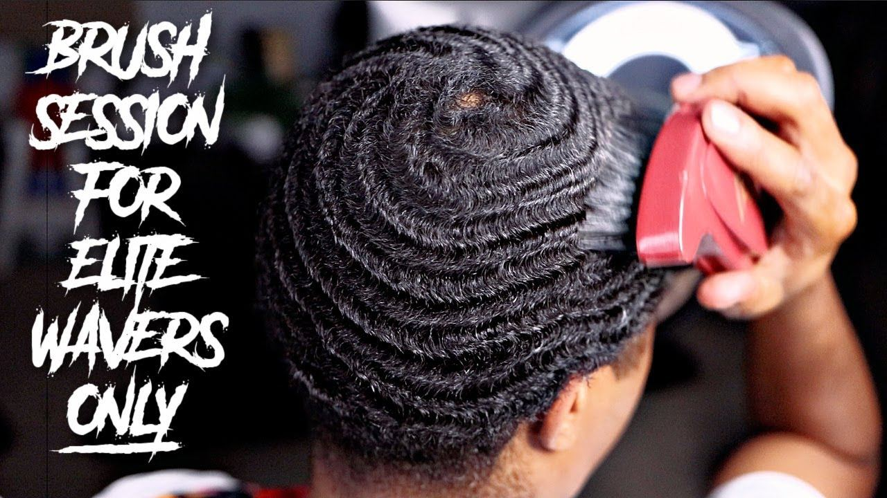

Blind Brushing: Training Pattern Memory Until Your Hands Know the Angles
Watch an elite waver brush and you will notice something: they barely look. In the car, in conversation, half-watching a game — the brush keeps perfect angles the whole time. That is pattern memory: the angles stored in your hands instead of your eyes. 360Jeezy (@360Jeezy) runs the kind of long, locked-in session in the video below where this skill gets built. This guide gives you the drills to build it deliberately instead of hoping it arrives.
Why mirror dependence caps your progress
Mirror brushing has two hidden costs. First, the mirror reverses everything, so the angle your eyes approve is not always the angle your hand is learning — you are training a visual correction, not a motor skill. Second, mirror sessions are short sessions: nobody stands at a bathroom mirror for forty-five minutes. The long sessions that build elite depth happen everywhere else, and only pattern memory works out there.
The goal is not to abandon the mirror — it stays your quality-control tool. The goal is to demote it: brush by feel, verify by mirror at the end, correct one thing next session. That loop, repeated, is how the hands take over.
The drills
Drill one: anchor points. Learn to find your crown and your hairline by touch, and start every stroke from a felt anchor, never from a guess. Drill two: counting strokes per panel — eight panels, a fixed count each — so coverage stays even when you cannot see it. Drill three: slow blind sets. Close your eyes for the final ten strokes of each panel and feel the brush track; open and verify. The error you find is the exact correction your hands needed.
Run one fully blind session per week — music on, mirror ignored — and one normal session where the mirror audits the result. Within a month your blind angles will tighten noticeably; within a season, your everyday brushing becomes background training that never stops accumulating.
Session discipline at the elite level
Pattern memory unlocks the real elite advantage: session volume without life disruption. A waver who can brush perfectly anywhere can stack hours the mirror-bound waver cannot — and waves, at the top level, are largely a contest of accumulated quality hours.
Protect the skill by protecting the routine: same brush progression, same panel order, same counts, every session. Ritual feels boring and builds brilliance. When your hands know the angles cold, every other part of the system — wolfing, washing, cutting — gets easier, because the foundation skill of the whole culture is finally automatic.
Watch: 360Jeezy's 45-minute elite session — the length and focus blind brushing is built inside
Video: “45 MIN BRUSH SESSION FOR ELITE WAVERS (ONLY)” by 360Jeezy (@360Jeezy) · Watch on YouTube
Shop the gear
Everything in this guide runs on the right gear: a durag that holds compression without slipping, a cap that stays put, and fabric that treats your hair right. The durag.store launch lineup is built to that standard — dual-layer construction, long tails, and stitching made to survive the routine. Join the launch list and use code GOLDSTANDARD for 15% off your first order.
Keep learning
- How to Brush 360 Waves: The Correct Angles for Every Section — Basic · Brushing
- The Brush Session Routine That Actually Builds Waves — Basic · Brushing
- Soft, Medium and Hard Brushes Explained: Which One, When, and Why — Intermediate · Brushing
Sources: Video — “45 MIN BRUSH SESSION FOR ELITE WAVERS (ONLY)” by 360Jeezy (@360Jeezy), youtube.com. Guide written by the durag.store Wave Lab.